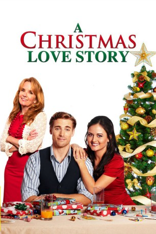

#7712 A Christmas Love Story
Alternativ: Love at the Christmas Table
 
 IMDB-Wertung: 6.5 / 10
IMDB-Wertung: 6.5 / 10  Metascore: 0
Metascore: 0 
Sam und Kat sind seit der Jugendzeit befreundet. Aber dieses Weihnachten könnte sich etwas ändern, denn Sam empfindet auf einmal tiefere Gefühle für Kat. Aber wie soll er damit umgehen, jetzt, wo die beiden doch eine freundschaftliche Basis gefunden haben? Lässt sich die Vergangenheit einfach so in eine neue, aufregende Zukunft transformieren?
Jahr: 2012
Dauer: 89 Minuten
FSK: 6
Land: USA Studio: Asylum, TheTonspuren: DTS - ,
Untertitel:
Auflösung: 1080p (1920x1080) Größe: 5509 MB
Genre: Drama, Komödie, Liebe, Weihnachten
Regisseur: Rachel Goldenberg
Drehbuch: Patrick J. Hobby
Soundtrack: Christian Davis
Darsteller:
 Danica McKellar als Kat Patton
Danica McKellar als Kat Patton Dustin Milligan als Sam Reed
Dustin Milligan als Sam Reed Lea Thompson als Elissa Beth Dixon
Lea Thompson als Elissa Beth Dixon Scott Patterson als Tom Patton
Scott Patterson als Tom Patton Brian Huskey als Bobby Reed
Brian Huskey als Bobby Reed Alexandra Paul als Eve Reed
Alexandra Paul als Eve Reed- William F. Bryant als Clint
- Cameron Goodman als Ashley
- Viva Bianca als Rebekah
- Carmina Garay als Chloe
- Avriella Ford als Shelly
- Amy V. Dewhurst als Tara
- Rob Lamer als Young Sam, Age 3
- Lindsey Lamer als Young Kat
 Garrett Ryan als Sam, Age 10-13
Garrett Ryan als Sam, Age 10-13- Mykayla Sohn als Alison Wonderland
- Bianca D'Ambrosio als Amber
- Olivia Mackenzie-Smith als Lindsay
- Elliott Armstrong als Family member
- Elaine Ballace als Background guest
- Jennifer Barbosa als Background guest
- Heather Alyse Becker als Background guest
- Jayden Maddux als Boy at Christmas table
- Jodie Coffey als Background guest
- Isabella Cuda als Girl at Christmas table
- Diane Frances Fisher als Background guest
- Sandra Henderson als Evelyn
- Georgia Rose Matlack als Girl at Children's Table
- Tyler Mazzei als Boy at Party
- Mahaila McKellar als Woman Holding Baby at Party
- Cheyanna Prelesnik als Girl at Party
- Jake Shaw als Boy at Christmas table
- Hannah Sohn als Girl at Family Gatherings
- André Van Driessche als Dinner Guest / Dancing Couple
 Waymond Lee als Christmas Party Guest (uncredited)
Waymond Lee als Christmas Party Guest (uncredited)- Scott Anthony Simmons als Accountant / Dinner Guest (uncredited)
- Luc Charbonnier als Milo
- Bodhi Bown als Trevor
- Gabriella Roberts als Kat, Age 10-13
- Draco McKellar Verta als Baby at Party
- Marlo Z. Alvarez als Background guest
- Marlene Argueta als Background guest
- Amber Ardieta als Background guest
- Michael Bernarding als Background guest
- Tanner Michael Bradberry als Background guest
- John Brandt als Background guest
- Loryn Shay Charbonnier als Girl in Snowball Fight
- Meryl Cooper als Background guest
- Philip Davidson als Background guest
- Lori Denison als Background guest
Datei: X:\2012(A-F)\Christmas Love Story, A (2012, FSK6, 1920x1080).mkv seit 15.12.2017
Festplatte: HD 2012(A-M)
 Es gibt insgesamt 102 Filme in der Gruppe '2012(A-F)'
Es gibt insgesamt 102 Filme in der Gruppe '2012(A-F)'